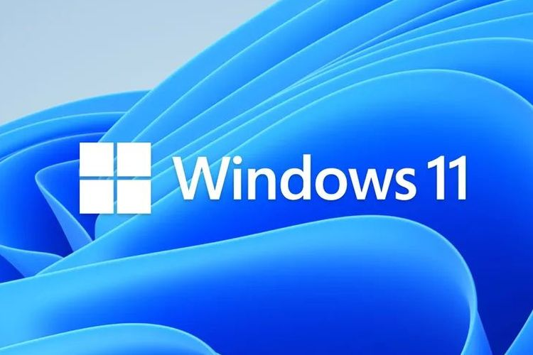

JANGAN Install Windows 11 versi “Leaked”!

Anda yang sedang ingin mencicipi Windows 11 sebaiknya tidak mencoba Windows 11 versi leaked atau yang tidak resmi karena kabarnya, versi yang “bocor” ini tidak sestabil versi Windows 11 Pre-Release (yang resmi dari Microsoft).
Beberapa orang yang sudah mengulas mengatakan senang dengan perubahan yang ada di Windows 11 dan beberapa yang lainnya tidak terlalu menyukai tampilan Windows 11 yang dikatakan agak ke-MacOS-MacOS-an. Meski demikian, tetap saja banyak yang ingin mencoba dan ingin tahu lebih dulu tentang sistem operasi Microsoft yang secara teknis dirilis secara penuh (yang resmi masih untuk uji coba/Insider Preview).
Sederhanya, Windows 11 belum selesai dan belum stabil. Windows 11 yang bocor juga secara teknis tidak resmi, jadi jika Anda menginstalnya dan ada yang rusak, Microsoft tidak memiliki tanggung-jawab.
Kami sarankan jika Anda benar-benar ingin mencoba Windows 11 adalah melalui saluran resmi Windows Insider Program. Jika saat ini Windows 10 adalah yang versi “bajakan”, jelas tidak akan bisa untuk update ke Windows 11 versi Pre-Release dari program Insider Windows.
Yang dikhawatirkan adalah, jika Anda mencoba mencari file ISO Windows 11 bukan di situs resmi Microsoft (misalnya Anda harus mengunduhnya di situs lain), maka resiko adanya peretas dan/atau phising semakin besar. Hati-hati juga jika ada link download yang menyamar seolah-olah file installasi Windows 11; jangan-jangan hanya SpyWare?
Memang menyenangkan untuk mencoba produk baru lebih awal, tetapi banyak alasan mengapa Anda harus menghindari file yang tidak jelas sumbernya. Bahkan, jika Anda hanya memiliki satu-satunya PC atau Laptop, sebaiknya Anda tidak mencoba versi pra-rilis resmi juga. Lain cerita jika Anda memiliki PC/laptop sekunder yang memang digunakan untuk menguji sistem baru.